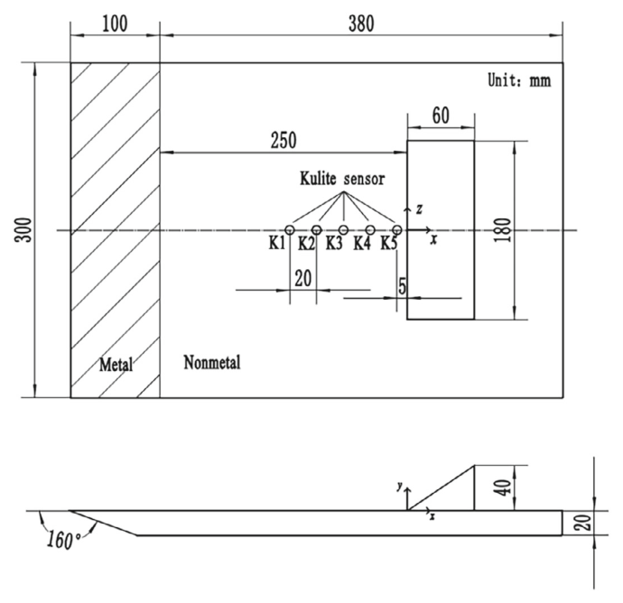
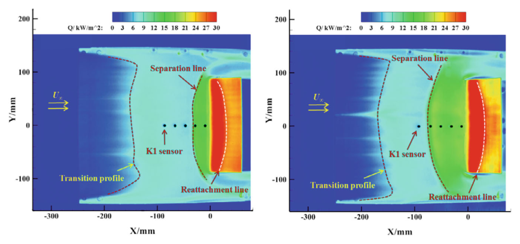
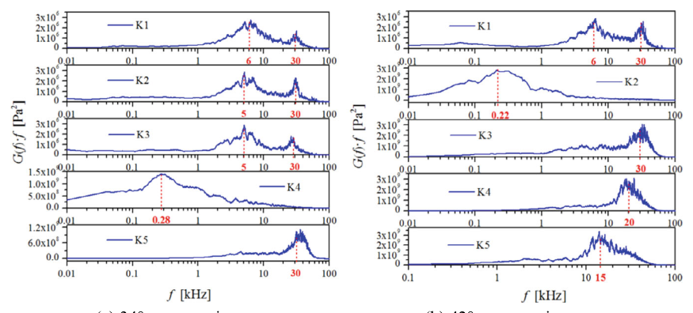
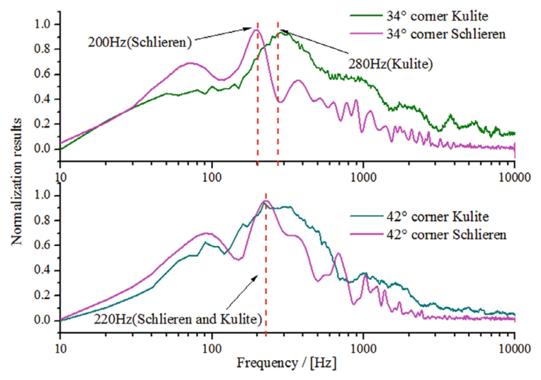

01中文摘要
在中国航天空气动力技术研究院高超声速风洞中，采用红外热图、脉动压力测量和高速激光纹影，研究马赫4.97下34°和42°平板压缩拐角模型的激波/湍流边界层干扰非定常特性，获取流场拓扑、波系结构、壁面热流和分离激波振荡频率。分离区内热流显著升高；湍流边界层内功率谱密度呈双峰分布，频率约6 kHz和30 kHz；间歇区以约0.2 kHz的低频为主，分离区转为约30 kHz的高频。
原始摘要（英文/原文）
The interaction between shock waves and thick boundary layers formed on the surface of an aircraft results in complex phenomena of shock wave/boundary layer interaction (SBLI). Local damage and rapid material fatigue on the aircraft’s surface, severely affecting aircraft safety, can be attributed to the peak heat flux within the turbulent boundary layer interaction zone and the low-frequency oscillation characteristics of shock waves. In this study, the unsteady characteristics of shock waveturbulent boundary layer interactions were investigated in hypersonic wind tunnel at the China Academy of Aerospace Aerodynamics. Advanced testing methodologies, such as infrared thermographic technology, fluctuation pressure measurement technology, and high-speed laser schlieren technology, were utilized to acquire data on flow topology, wave system structure, surface heat flux, and oscillation frequency of separation shock within the interaction zones of 34° and 42° flat plate compression corner models at a Mach number of 4.97. A significant increase in heat flux within the separation zone was observed. Furthermore, a bimodal distribution of the power spectral density within the turbulent boundary layer was identified, with frequencies of approximately 6 kHz and 30 kHz, respectively. Low-frequency predominance, around 0.2 kHz, was noted within the intermittent zone, transitioning to high frequency, approximately 30 kHz, within the separation zone.
02阅读说明
类型：会议论文（Proceedings of the 34th International Symposium on Shock Waves, Springer, 2025, pp. 425–439），以实验为主、辅以RANS数值模拟确定测点。材料为15页全文文本和12幅抓取图件；PDF文本层完整，图内坐标与峰值无法逐点读取。信息完整度中等：来流工况、模型尺寸、测点布置与特征频率较完整，但边界层参数（δ、θ、Reδ）、PSD归一化、频率分辨率与不确定度均未给出。 文章类型：会议
03一句话核心与三句话摘要
M4.955下34°/42°压缩拐角：湍流边界层呈6/30 kHz双峰，分离激波低频约0.2 kHz且受拐角角影响很小。
- 高超声速SBLI中的分离激波低频振荡与局部热流峰值威胁飞行器结构安全，但同一风洞内多测点、多手段同步测量的数据仍有限。 AI概括
- 在中国航天空气动力技术研究院高超声速风洞中，以来流M=4.955、T0=373 K、P0=2.0 MPa对34°和42°平板压缩拐角开展红外热像、Kulite脉动压力与5 kHz高速激光纹影测量，并用RANS压力分布布置K1–K5测点。 原文明确
- 结果显示分离区随拐角角显著增大，湍流边界层呈6 kHz与30 kHz双峰，间歇区呈0.2–0.3 kHz低频，纹影与Kulite互相验证，作者据此推测气泡足够大时低频主频不随气泡尺寸变化。 AI概括
04核心内容清单
| 要点 | 类型 | 重要性 | 原文依据 | 属性 |
|---|---|---|---|---|
| 湍流边界层内预乘功率谱呈6 kHz与30 kHz双峰，34°的K1–K3与42°的K1均如此。 | 实验结果 | A | p9–10，3.2节，Fig. 8a/8b | 原文明确 |
| 分离激波脚附近间歇区呈低频：34°的K4约0.28 kHz，42°的K2约0.22 kHz。 | 实验结果 | A | p9–10，3.2节，Fig. 8 | 原文明确 |
| 分离区内为约30 kHz单峰高频；42°沿流向由K3的30 kHz降至K4的20 kHz、K5的15 kHz。 | 实验结果 | A | p10，3.2节，Fig. 8b | 原文明确 |
| 42°分离区明显大于34°；34°分离线接近K4，42°分离线对应K2。 | 实验结果 | A | p8，3.1节，Fig. 7 | 原文明确 |
| 中心线热流在前缘上升、下游缓降指示转捩并充分湍流；分离激波处再升，压缩角处第三次上升，峰值在再附点下游。 | 实验结果 | A | p8，3.1节，Fig. 6 | 原文明确 |
| 高速纹影f-PSD给出分离激波0.2 kHz（34°）与0.22 kHz（42°），模型自振<0.01 kHz，可排除模型振动影响。 | 实验结果 | A | p11，3.3节，Figs. 10–11 | 原文明确 |
| 34°时Kulite的0.28 kHz与纹影0.2 kHz存在偏差，作者归因于分离激波脚与传感器的相对位置。 | 作者解释 | B | p11–12，3.3节，Fig. 12 | 原文明确 |
| 压缩角从34°增至42°对低频主频影响很小，作者据此推测大气泡极限下主频与气泡尺寸无关。 | 作者推论 | B | p13–14，第4节 | 原文明确 |
| 以RANS压力分布确定分离区/间歇区位置并指导K1–K5布置，是实验设计的关键环节。 | 方法 | B | p4–5，2.2节，Fig. 2 | AI概括 |
| 红外热像可同时识别转捩剖面、分离线与再附线，是布置脉动测点的前置手段。 | 方法 | B | p8，3.1节 | AI概括 |
| 全文未给出边界层厚度、动量厚度、Reδ、分离泡长度/高度及PSD不确定度，限制了与其它工况的定量比较。 | 材料局限 | C | 全文，位置不详 | AI概括 |
05引言：研究问题与领域缺口
第1节（p1–3）指出，高超声速飞行器表面的激波/湍流边界层干扰（STBLI）会产生强脉动压力环境，其来源包括湍流脉动、边界层分离与激波振荡；分离激波脚在分离区内前后振荡并伴随分离泡胀缩，即SBLI非定常性，其频率通常比来流边界层湍流低1–2个量级。作者将低频振荡机制归为上游机制、下游机制及上下游耦合三类，并回顾了Dolling、Ganapathisubramani、Humble、Priebe、Huang、Hu、Hao、Sartor、Tong/Li、Poggie等的工作（p2–3）。缺口在于需要更多同一构型、同一风洞内的实验数据来厘清流场结构与分离激波低频振荡的关系；本文目标是补充经验数据，并以数值模拟选点、红外定位转捩与干扰区、Kulite测脉动、纹影测激波空间振荡并相互校验（p3）。
06流动条件与几何构型
| 项目 | 数值/描述 | 依据 | 备注 |
|---|---|---|---|
| 来流马赫数 M∞ | 4.955（Table 2；摘要写4.97，存在不一致） | p8 Table 2；p1 Abstract | 数值计算表1给4.955 |
| 总温 T0 | 373 K | p8 Table 2 | |
| 总压 P0 | 2.0 MPa | p8 Table 2 | |
| 静温 T∞ | 62.16 K | p8 Table 2 | |
| 静压 P∞ | 3984.46 Pa | p8 Table 2 | |
| 单位雷诺数 | 4.40×10^7 m^-1 | p8 Table 2；p5 Table 1 | |
| 壁温 Twall | 300 K（计算条件） | p5 Table 1 | 实验工况表2未单列壁温 |
| 模型长度 | 480 mm | p4，2.2节 | |
| 模型宽度 | 300 mm | p4，2.2节 | |
| 压缩拐角位置 | 距平板前缘350 mm | p4，2.2节 | |
| 压缩角 | 34°与42° | p1 Abstract；p8 3.1节 | |
| 风洞与来流品质 | 中国航天空气动力技术研究院高超声速风洞，空气介质，马赫数标定相对偏差<±0.01，满足流场均匀性指标 | p4，2.1节 | |
| 边界层状态 | 红外显示前缘后转捩完成，K1处为充分湍流；δ、θ、Reδ未给出 | p8，3.1节 | 定量边界层参数文中未提及 |
| 模型展向均匀性 | 受流场堵塞比限制，压缩拐角沿展向分布不均匀 | p4，2.2节 | |
| 脉动测点 | K1–K5，沿中心线20 mm间隔 | p5，2.2节 | |
| 纹影拍摄频率 | 5000 Hz（系统最高20 kHz） | p10，3.3节；p7，2.3.2节 | |
| Kulite采样频率 | 5 MHz | p7，2.3.3节 | |
| 红外帧频 | 最高100 Hz | p7，2.3.1节 |
07核心现象与关键参数
| 参数 | 定义 | 数值 | 关系/说明 | 依据 |
|---|---|---|---|---|
| 预乘功率谱 G(f)·f | G(f)为功率谱密度，f为频率（kHz），以G(f)·f显示脉动信号主频 | 用于识别6、30、0.28、0.22、30/20/15 kHz等峰 | 峰位即特征频率 | p8–9，3.2节 |
| 湍流边界层特征频率（中频） | 预乘PSD第一峰 | 约6 kHz（34° K1–K3；42° K1） | p9–10，Fig. 8 | |
| 湍流边界层特征频率（高频） | 预乘PSD第二峰 | 约30 kHz（34° K1–K3；42° K1） | p9–10，Fig. 8 | |
| 间歇区特征频率（34°） | 分离激波脚附近K4预乘PSD峰 | 约0.28 kHz | p9，Fig. 8a | |
| 间歇区特征频率（42°） | K2预乘PSD峰 | 约0.22 kHz | p10，Fig. 8b | |
| 分离区特征频率（34°） | K5预乘PSD峰 | 约30 kHz | p10，Fig. 8a | |
| 分离区特征频率（42°） | K3–K5预乘PSD峰 | 约30、20、15 kHz，沿流向递减 | p10，Fig. 8b | |
| 纹影分离激波f-PSD峰（34°） | y像素时间序列FFT | 约0.2 kHz | p11，Fig. 11 | |
| 纹影分离激波f-PSD峰（42°） | y像素时间序列FFT | 约0.22 kHz | p11，Fig. 11 | |
| 模型固有振动频率 | 模型自身振荡的f-PSD | 低于0.01 kHz | p11，Fig. 11 | |
| 纹影分析帧数 | 用于y像素提取的连续图像数 | 10000帧 | p10–11，3.3节 | |
| 分离线位置 | 由红外热流分布识别的分离线 | 34°接近K4；42°对应K2 | p8，Fig. 7 | |
| 热流峰值位置 | 中心线热流最大处 | 再附点下游附近 | 文中未给出具体热流数值 | p8，3.1节，Fig. 6 |
| 分离泡长度/高度 | 分离区几何尺度 | 文中未提及（仅给出分离线相对测点位置） | p8，3.1节 |
08方法与数据
实验在中国航天空气动力技术研究院高超声速风洞完成，介质为空气，马赫数标定相对偏差小于±0.01（p4）。模型为480 mm长、300 mm宽的平板压缩拐角，拐角距前缘350 mm；受流场堵塞比限制，展向分布不均匀（p4）。数值模拟求解湍流Navier–Stokes方程，有限体积法，二阶守恒TVD格式，HLLC近似Riemann求解器与Minmod限制器，LUSGS隐式时间推进；来流条件与实验一致（p4–5，Table 1）。据计算压力分布确定干扰区尺寸和位置，在平板中心线以20 mm间隔布置K1–K5（p5）。测量包括：红外热像仪（−10–1200 °C、3.7–4.8 µm、热灵敏度<25 mK、精度±0.1 K、最高100 Hz、640×512，p7）；高速激光纹影（脉冲激光、500 ns曝光、1024×1024、系统帧率可达20 kHz，p7；实验拍摄频率5000 Hz，p10）；Kulite XCQ-80（固有频率240 kHz、直径2 mm、长6.4 mm、量程0–35 kPa、精度0.1% FS、采样5 MHz，p7）。纹影处理为在图像中取平行y轴的参考线，逐帧记录离散像素与参考线交点的y像素坐标，共10000帧，并对结果做FFT得到f-PSD；同时监测模型自身振动（p10–11）。
| 项目 | 内容 | 依据 | 备注 |
|---|---|---|---|
| 研究类型 | 风洞实验为主，RANS数值模拟用于确定分离区位置与传感器布置 | p3–5 | |
| 风洞 | 高超声速风洞，空气介质，M标定相对偏差<±0.01 | p4，2.1节，Fig. 1 | |
| 数值方法 | 湍流Navier–Stokes方程，有限体积法，二阶守恒TVD，HLLC近似Riemann求解器，Minmod限制器，LUSGS隐式推进 | p4–5，2.2节 | |
| 湍流模型 | 文中未提及 | p4–5 | 仅称求解湍流Navier–Stokes方程 |
| 网格与y+ | 文中未提及 | p4–5 | |
| 数值来流条件 | 与实验一致：M=4.955，Twall=300 K，T∞=62.16 K，P∞=3984.46 Pa，Re/m=4.40×10^7 | p5 Table 1 | |
| 模型 | 平板压缩拐角，480 mm×300 mm，拐角距前缘350 mm，角度34°/42° | p4–6，2.2节，Figs. 3–4 | |
| 测点布置 | K1–K5沿中心线20 mm间隔，覆盖湍流边界层、间歇区与分离区 | p5，2.2节，Fig. 2 | |
| 红外热像 | −10–1200 °C，3.7–4.8 µm，热灵敏度<25 mK，精度±0.1 K，最高100 Hz，640×512 | p7，2.3.1节，Fig. 5 | |
| 高速激光纹影 | 脉冲激光光源，500 ns曝光，1024×1024，系统20 kHz；实验拍摄5000 Hz | p7，2.3.2节；p10，3.3节 | |
| Kulite传感器 | XCQ-80，固有频率240 kHz，直径2 mm，长6.4 mm，量程0–35 kPa，精度0.1% FS | p7，2.3.3节 | |
| 脉动压力采样 | 5 MHz | p7，2.3.3节 | |
| 纹影数据处理 | 取平行y轴参考线，逐帧记录激波交点y像素，10000帧，FFT得f-PSD；同步监测模型振动 | p10–11，3.3节 | |
| 验证方式 | 纹影f-PSD与Kulite低频结果归一化后对比，并排除模型自振影响 | p11–12，Fig. 12 | |
| 不确定度与重复性 | 文中未提及 | 全文 |
09核心推导与公式
原文未给出从守恒律出发的完整解析推导；以下仅列出材料中可核对的定义或建模链，不补写教科书推导。
本文为实验研究，辅以RANS数值模拟选点；文中未给出解析或半解析推导。唯一的定量处理关系是预乘功率谱G(f)·f用于突出主频，以及由纹影y像素时间序列做FFT得到f-PSD；这些属于数据处理定义，不是物理模型推导。
适用边界：未给出PSD归一化、窗函数、频率分辨率与不确定度；纹影5000 Hz采样对30 kHz信号欠采样，只能可靠验证0.2–0.3 kHz低频；数值部分未给湍流模型、网格与y+，不能据此复现分离区尺寸。
10结果：主要发现与关键证据
红外结果（p8，Figs. 6–7）：34°模型中心线热流从前缘上升后逐渐下降，指示边界层转捩并在K1处已充分湍流；沿流向的显著抬升归因于拐角上游分离激波，气体密度与分子热运动增强；压缩角处出现第三次上升，热流峰值位于再附点下游。34°与42°对比显示42°分离区显著更大，34°分离线接近K4，42°分离线对应K2（p8）。脉动压力结果（p9–10，Fig. 8）：34°时K1–K3位于湍流边界层，预乘谱呈约6 kHz（中频）与30 kHz（高频）双峰；K4位于分离激波脚附近间歇区，特征频率约0.28 kHz；K5位于分离区，约30 kHz。42°时K1呈6 kHz与30 kHz双峰，K2（间歇区）约0.22 kHz，K3、K4、K5（分离区）分别约30、20、15 kHz，且沿流向逐渐降低（p10）。纹影结果（p10–12，Figs. 9–12）：分离激波特征频率34°约0.2 kHz、42°约0.22 kHz，模型自振低于0.01 kHz，可忽略；34°时Kulite间歇区0.28 kHz与纹影0.2 kHz存在小偏差，作者归因于分离激波脚与Kulite传感器的相对位置，传感器未必准确捕捉激波脚特征频率（p11–12）。
| 发现 | 证据 | 证据类型 | 强度 | 位置 | 属性 |
|---|---|---|---|---|---|
| 34°与42°模型的湍流边界层脉动均呈6 kHz与30 kHz双峰。 | K1–K3（34°）与K1（42°）的预乘PSD出现约6 kHz与30 kHz峰 | 频谱测量 | 强 | p9–10，3.2节，Fig. 8 | 原文明确 |
| 分离激波脚附近间歇区由低频振荡主导，34°约0.28 kHz、42°约0.22 kHz。 | K4（34°）与K2（42°）预乘PSD单峰位于0.2–0.3 kHz | 频谱测量 | 强 | p9–10，Fig. 8 | 原文明确 |
| 分离区呈约30 kHz高频单峰；42°沿流向由30 kHz降至20、15 kHz。 | 34° K5约30 kHz；42° K3/K4/K5约30/20/15 kHz | 频谱测量 | 强 | p10，Fig. 8b | 原文明确 |
| 42°分离区显著大于34°，分离线由K4前移至K2附近。 | 红外热流分布识别的分离线位置对比 | 热流测量 | 强 | p8，3.1节，Fig. 7 | 原文明确 |
| 热流沿程三次抬升，峰值位于再附点下游。 | 34°中心线热流：前缘上升→缓降（转捩/湍流）→分离激波处上升→压缩角处上升→再附点下游峰值 | 热流测量 | 中 | p8，Fig. 6 | 原文明确 |
| 高速纹影独立测得分离激波0.2/0.22 kHz，模型自振<0.01 kHz，可排除模型振动。 | 纹影y像素序列f-PSD；34°约0.2 kHz、42°约0.22 kHz | 纹影测量 | 强 | p11，Figs. 10–11 | 原文明确 |
| 34°时Kulite的0.28 kHz与纹影0.2 kHz不完全一致，差异被归因于激波脚与传感器相对位置。 | 归一化f-PSD对比（Fig. 12）及作者说明 | 方法对比 | 中 | p11–12，Fig. 12 | 原文明确 |
| 压缩角34°→42°对低频主频影响很小，作者推测大气泡极限下主频与气泡尺寸无关。 | 两角度分离激波频率约0.2 kHz，结论(3) | 跨工况比较 | 中 | p13–14，第4节 | 原文明确 |
11机制解释与论证链
作者给出的机制链为：压缩拐角产生逆压梯度→边界层分离并在上游形成分离激波→分离激波脚在分离区内前后振荡、分离泡胀缩→壁面出现低频脉动（0.2–0.3 kHz）；湍流边界层本身则携带约6 kHz与30 kHz的湍流脉动，因此无分离时呈双峰。热流方面，气流经分离激波后密度与分子热运动增强，壁面热流抬升；压缩角与再附点下游出现峰值（p8–10）。上述为作者解释与AI概括的结合；文中未用条件采样、相关分析或模态分解证明6/30 kHz峰的具体来源，也未定量区分上游机制与下游机制。
12讨论：结论、贡献与局限
第4节（p13–14）归纳三点：分离区范围随压缩角增大而显著增大，热流峰值位于再附点下游；湍流边界层脉动呈6 kHz与30 kHz双峰，分离激波以0.2–0.3 kHz低频振荡为主，分离区内则为约30 kHz单峰高频并沿流向衰减；纹影验证了Kulite测得的低频，34°与42°的分离激波特征频率近似相等（约0.2 kHz）。作者进一步提出假设：当分离泡足够大时，低频振荡主频不受气泡尺寸变化影响；由于实验数据有限，后续将增加压缩角范围检验该假设（p13–14）。讨论未给出低频机制的定量判别，也未将6 kHz/30 kHz峰与具体湍流结构或剪切层涡一一对应。
作者结论
作者结论（p13）：(1) 激波边界层干扰分离区范围随压缩角增大而显著增大，热流峰值出现在再附点下游；(2) 湍流边界层内脉动压力呈6 kHz与30 kHz双峰，分离激波以0.2–0.3 kHz低频振荡为主，分离区内为约30 kHz单峰高频并沿流向逐渐减小；(3) 高速激光纹影验证了Kulite测得的分离激波低频，34°与42°的特征频率近似相等，约0.2 kHz。作者进一步认为压缩角变化对低频主频影响很小，并假设分离泡足够大时主频不受气泡尺寸影响，计划以更宽角度范围检验（p13–14）。
主要贡献
- 在同一高超声速风洞内对34°与42°平板压缩拐角同步获取红外热流、Kulite脉动压力与高速激光纹影数据。
- 给出湍流边界层6/30 kHz双峰、间歇区0.2–0.3 kHz与分离区约30 kHz的分区频谱图像。
- 用纹影独立验证分离激波低频，并排除模型自振影响。
- 提出“大气泡极限下低频主频与气泡尺寸无关”的可检验假设。
局限与未解决问题
作者承认实验数据有限，仅两个压缩角，需更宽角度范围检验假设（p13–14）。AI识别的局限包括：仅一个来流马赫数与单一单位雷诺数；未给出δ、θ、Reδ、分离泡长度/高度与边界层剖面，无法换算St或与文献定量对比；Kulite沿流向间距20 mm，传感器与分离激波脚相对位置可能错位（作者亦承认，p11–12）；红外帧频仅100 Hz，不能分辨30 kHz脉动；纹影5000 Hz采样对30 kHz信号欠采样，仅能验证低频；PSD归一化、窗函数、频率分辨率与不确定度未给出；数值模拟的湍流模型、网格、y+未交代，CFD仅用于选点；未开展条件采样、互相关或模态分解，6 kHz/30 kHz峰的物理来源仍属推断；42°分离区频率沿流向降低的机制未解释；模型展向分布受堵塞比影响，二维性未定量验证。
13对高速流动与工程的意义
对高速流动与工程的意义：提供了一套可复用的“CFD选点+红外定位+Kulite频谱+高速纹影验证”实验流程，可用于进气道、隔离器、控制面根部等压缩拐角构型的脉动压力环境评估；0.2–0.3 kHz低频接近结构模态时应重点关注分离激波脚位置与传感器布置；分离区30 kHz高频及沿流向衰减提示热流/疲劳载荷的空间分布并非均匀。本文能回答同一风洞、M=4.955下34°/42°拐角的特征频率分区与热流峰值位置；不能回答频率随M、Re、边界层厚度、分离泡尺度的定量标度，也不能给出低频振荡的因果机制或控制效果。工程外推（尤其至飞行Re与三维构型）需谨慎，属AI推断。
14核心图件




15可引用原文素材
| 原文短句 | 可支持的观点 | 位置 | 使用建议 |
|---|---|---|---|
| “a bimodal distribution of the power spectral density within the turbulent boundary layer” | 湍流边界层6/30 kHz双峰 | p1，Abstract | 作为双峰结论的原文依据 |
| “Low-frequency predominance, around 0.2 kHz, was noted within the intermittent zone” | 间歇区低频主导 | p1，Abstract | 概括低频量级 |
| “the separation line of the 34° compression corner aligns closely with the K4 sensor” | 34°分离线位于K4附近 | p8，3.1节 | 说明测点与分离区对应关系 |
| “the characteristic frequency within the separation zone gradually decreases along the flow direction” | 42°分离区频率沿流向降低 | p10，3.2节 | 引用分离区频率空间衰减 |
| “the influence of the model's inherent oscillation on the low-frequency oscillation of the separated shock wave can be discounted” | 排除模型自振影响 | p11，3.3节 | 方法可靠性论证 |
| “variations in the compression corner angle have a minimal effect on this dominant frequency” | 拐角角对低频主频影响小 | p13，第4节 | 跨工况结论 |
| “when the size of the separation bubble is sufficiently large, the dominant frequency of low-frequency oscillations remains unaffected by changes in the bubble size” | 大气泡极限假设 | p13–14，第4节 | 作为待检验假设引用，需注明作者推测 |
16最终核验
| 核验项 | 结论 |
|---|---|
| 仅基于全文 | 是：仅使用bundle中的全文文本、图注和已抓取图件清单；未引入外部文献或知识。 |
| A 级要点有依据 | 是：A级条目均有页码、节号和图号对应；热流峰值、分离线位置、各特征频率均可在p8–p11正文与Figs. 6–8、11中找到依据。 |
| 属性标注 | 是：three_sentence、core_points、findings均标注原文明确/AI概括/AI推断；作者推测性内容单独标明。 |
| 覆盖范围 | 覆盖Introduction、Method（风洞、模型、数值、三种测量）、Results and Discussion（红外、脉动压力、纹影）与Conclusion；定量判断均带页码或图表位置。 |
| 无编造 | 是：未编造页码、图号、公式或数据；缺失的δ、θ、Reδ、PSD归一化、网格与湍流模型均写“文中未提及”；摘要4.97与表2 4.955的不一致已如实保留。 |
需回原文确认
- 摘要给出M=4.97，Table 2为4.955，实际来流马赫数以哪个为准？
- K1–K5相对拐角的x坐标及边界层δ、θ、Reδ未给出，如何把kHz换算为St？
- 6 kHz与30 kHz峰的物理来源分别是什么（上游湍流结构、剪切层涡脱落还是激波脚运动）？
- PSD的归一化方式、窗函数、频率分辨率与幅值不确定度是多少？
- 纹影5000 Hz采样对30 kHz信号欠采样，如何能支持分离区高频结论？
- 42°分离区特征频率沿流向由30 kHz降至15 kHz的机制是什么？
- 数值模拟采用何种湍流模型、网格量与y+？
- 单马赫数、两角度、单Re的数据能否支持“气泡足够大时主频不变”的假设？
17关联文献
依据标签、板块、构型与作者脉络自动关联，可据此追踪同一问题的前序与后续工作。
18引用格式
选择期刊风格后复制；出处保留原刊名。BibTeX 可直接用于 LaTeX。
引用格式
Zhang, J., Ji, F., Sha, X., Guo, Y. & Gan, C. 2025 Experimental Study on Unsteadiness in Hypersonic Shock Wave/Turbulent Boundary Layer Interaction. Proceedings of the 34th International Symposium on Shock Waves, Volume 1: Fundamentals 425–439. https://doi.org/10.1007/978-981-96-4767-5_37
PDF上传 PDF 并更新本页
本页缺少全文、摘要或图件时，可在浏览器本地补入 PDF。解析完全在本机完成，不上传网络；完成后会更新本页的 PDF 打开链接、原摘要、IMRaD 机器抽取、关键句与含图页面。复杂的公式语义与中文深度解读仍以原文和既有精读记录为准。